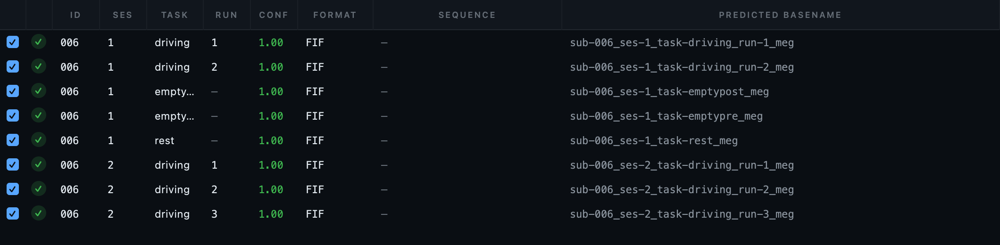
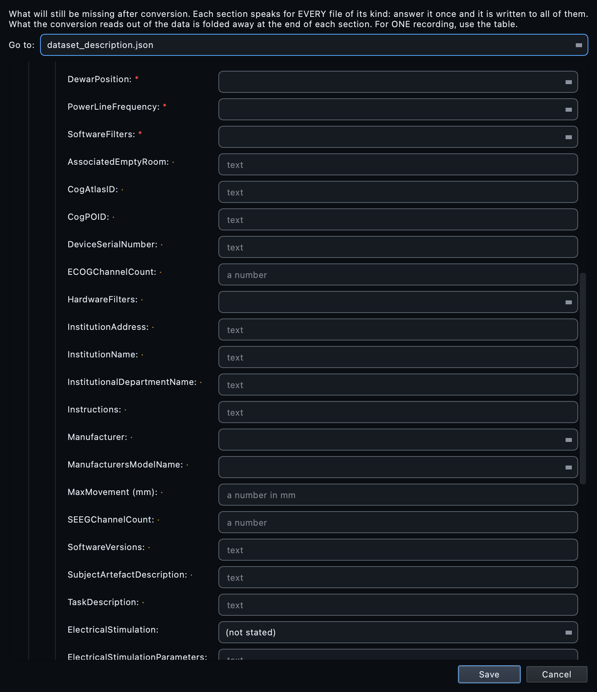

MEG, start to finish.
Twenty-three FIF recordings from an Elekta system, two subjects, three sessions, including the empty-room recordings taken before and after each visit. MEG is the modality where the most metadata is already in the file, so this page is largely about what BIDS Manager should be left alone to do, and about the handful of things it genuinely cannot know.
The GUI walkthrough explains each control once, for every modality. This page covers what is specific to MEG.
Elekta sample (2 subjects, 3 sessions)
Two subject folders.
sub_us04rt22/ holds two date-named
sessions (220209 and
220215);
sub_ye07us06/ holds one
(220221). Twenty-three FIF files in
total across driving runs, rest, and empty-room before and after.
Two subjects, three sessions, twenty-three files.
The folder uses Elekta's usual convention: a subject folder, then a date-named folder per visit, then the recordings.
MEG is the easy modality, and it is worth knowing why
A FIF file is rich. It carries the channel list with types, the sampling rate, the acquisition filters, the head position, the digitised points, the coil frequencies and the measurement date. mne-bids reads all of that and writes it into the sidecar, the channels table and the coordinate system files without being asked.
The practical consequence is that BIDS Manager deliberately does less here. It does not overwrite the manufacturer mne-bids derives from the format, and it does not duplicate the head-localisation fields the channels already answer. What it asks for is the short list that genuinely is not in the file, and nothing more.
Sessions come out of the path.
When the path between the subject folder and the recording contains a
date-shaped token, YYMMDD or
YYYY-MM-DD, each date is treated as a
separate session, ordered by date.
-
Several dates for one subject becomes one session
per date.
sub_us04rt22has two, so its recordings carryses-1andses-2. -
A single date is not a session in any meaningful
sense, so no session entity is written.
sub_ye07us06is the example.
Where the path has no date at all, the recording date inside the file
is used instead, which is the same rule the MRI side applies to study
dates. Either way, look at the ses column
before converting. It is
inferred, and inference is exactly the kind of thing worth a glance.
ses-1 and
ses-2 are safe defaults, not good
names. If the visits mean something, pre
and post, or the date itself, select the
rows and bulk-edit the ses column before
you convert.
Scan the folder.
Create a project, point Raw input at the top of the tree, and press
Scan. Twenty-three rows, one per
.fif, no skips.
The task and run entities come out of the filenames cleanly on this
dataset: task_driving_run_01.fif
decomposes into task-driving and
run-1 with no help from you. That is worth
checking rather than assuming, because it is a filename convention
rather than a standard, and the next lab's convention will differ.
The manufacturer is inferred from the format rather than a header:
.fif means MEGIN or Elekta,
.ds means CTF,
.con and .sqd
mean KIT, .kdf means KRISS. It is shown as
a read-only suggestion and is not written into the sidecar, because
mne-bids writes the manufacturer itself and overwriting a value derived
from the file with one guessed from an extension would be a step
backwards.
Read the inventory.
| Column | On this dataset |
|---|---|
id | 001 and 002, from the folder names. |
ses | Inferred. Two sessions for the first subject, none for the second. The column to read first. |
task, run | Parsed from the filenames. driving with runs 1 to 6, plus rest. |
format | FIF throughout. |
n_chan, sfreq, duration | Read from mne.info. Hidden by default; add them from Manage columns. An empty-room recording is much shorter than a task run, which is a quick way to confirm the two are not mixed up. |
predicted basename | The filename this row produces. Red means a clash. |

ses column is the inferred one and the
column to read first. Task and run came out of the filenames cleanly on
this dataset, which is a convention rather than a rule, so it is worth
confirming rather than assuming.
On a CTF or 4D system the recording is a folder, not a file:
.ds for CTF, and a set of numbered files for
4D and BTi. The scanner treats the folder as one recording, which is
what you want, and the Editor's tree gives it a folder icon so it is
obvious at a glance.
Empty-room recordings.
Empty-room data is not a task recording, and the standard has a
specific place for it: the task label
noise, with the timing carried by an
acq entity. On this dataset
task_emptypre and
task_emptypost become
task-noise with
acq-pre and
acq-post.
Getting this right matters more than it looks. An empty-room recording named as if it were a task will be analysed as one by any pipeline that selects on task, and a noise recording averaged into a condition is a hard error to find later.
Associating the noise recording with the session
The MEG section of the dataset metadata carries an associated empty-room field, which is one of the small number of things mne-bids cannot derive: it records which noise recording belongs to which session. Fill it if your analysis will use it. It sits alongside the other two fields in the same category, the dewar position and any subject-artefact description, which are equally facts about the session rather than the file.
The short list MEG actually needs.
Open Dataset metadata. The MEG section is deliberately small, because most of what BIDS wants is already in the FIF file. These are the fields that are not:
| Field | Why it is asked |
|---|---|
PowerLineFrequency | Required. A property of the building. |
DewarPosition | Upright or supine. Not in the file, and it changes how the data should be interpreted. |
AssociatedEmptyRoom | Which noise recording goes with this session. |
| Subject artefact description | Dental work, an implant, anything that shows in the data and has an explanation. |
InstitutionName, department | Asked once in the modality-agnostic section, since every modality shares it. |
Continuous head localisation, the digitised head points, the head coil frequencies. mne-bids derives all of these from the channels and writes them correctly. Asking you to retype them would create two sources of truth for the same fact, and one of them would eventually be wrong.

Convert.
Press Run conversion. All twenty-three recordings
convert. Each row goes to mne-bids, which
writes the FIF in its native format, without transcoding, alongside a
channels table, the coordinate system files describing where the
sensors and the head were, and the JSON sidecar.
Two MEG-specific behaviours are worth knowing. The standard-montage step that EEG runs is skipped, because MEG sensor positions come from the device geometry rather than from a named cap layout. And the conversions are run one at a time rather than in parallel, because the underlying writer is not safe to run concurrently on the same tree; DICOM and physio conversion stays parallel.
Look at the signal.
Open the dataset in the Editor and click a converted recording. The metadata card comes first, then Load signal opens the interactive viewer.
MEG needs channel-type handling that EEG does not, and the viewer has it. Magnetometers and gradiometers can be shown separately or together, and CTF axial gradiometers are handled as their own type rather than being lumped in. Without that, a magnetometer trace and a gradiometer trace share an axis whose scale suits neither.
events.tsv.
Check the empty-room recording too
The power spectrum of a noise recording is the most useful single view in an MEG dataset. It tells you the noise floor of the room on that day, it shows the mains peak and its harmonics, and a sensor that has drifted or is failing stands out from its neighbours immediately. Comparing the before and after recordings from one session takes about a minute and occasionally saves a study.

PowerLineFrequency you put in
the template is the one actually present in the data. Switch to
Average (per type) to read magnetometers and gradiometers
separately, since they sit on very different scales. Drag to pan,
wheel to zoom, and the crosshair reads out frequency and power.
Validate.
Press Validate dataset. On this dataset: 50 clean
files, 24 warnings, no errors. As with EEG, the warnings are
TODO placeholders in recommended fields:
the dataset-level ones about your study, plus the MEG recommended
fields that neither the file nor the template supplied,
ManufacturersModelName and
SoftwareVersions among them.
If you want the deeper pass, turn on Deep checks. It reads file contents rather than only names and metadata, which catches a truncated recording that is otherwise indistinguishable from a healthy one.


Real numbers from this dataset.
One row per .fif, no
skips. Subjects from the folder names, sessions from the
date-shaped subfolders.
All succeed. Each FIF written natively with its
channels table, coordinate files and sidecar. Empty-room recordings
become task-noise with
acq-pre and
acq-post.
No errors. The 24 warnings are
TODO placeholders in recommended
fields.
From the command line.
# 1. Create the dataset and its project. bidsmgr-create ~/bids/elekta --name "Elekta MEG sample" # 2. Scan. 23 rows; sessions inferred from the date folders. bidsmgr-scan ~/raw/MEG_Elekta_sample_data \ --project ~/bids/elekta --line-freq 50 # 3. Convert. 23 of 23. bidsmgr-convert --project ~/bids/elekta # 4. Fill what can be filled, mark what cannot. bidsmgr-metadata --project ~/bids/elekta --fill-todos # 5. Validate. 50 ok / 24 warn / 0 err. bidsmgr-validate ~/bids/elekta
Every flag is documented in the CLI reference.
What usually goes wrong with MEG.
| What you see | What it means |
|---|---|
| Sessions where you expected none, or the reverse | Session inference read the path differently than you did.
Edit the ses column, or clear it, before
converting. It is
a guess, and it is presented as one. |
| An empty-room recording named as a task | The filename convention did not match. Set the task to
noise and use an
acq entity for the timing. |
A CTF .ds folder appearing as many rows |
It should appear as one. If it did not, the folder is probably incomplete or renamed. Check that it still holds the files CTF writes. |
| The manufacturer in the sidecar is not what you set | That is deliberate for MEG. mne-bids writes the manufacturer it derives from the file, and BIDS Manager does not overwrite it with a value guessed from the extension. |
| Magnetometer and gradiometer traces look wrong together | They are on very different scales. Use the channel-type filter to view one kind at a time. |
| Conversion feels slower than an equivalent MRI run | MEG conversions are run one at a time on purpose: the writer is not safe to run concurrently on the same tree. |
Next
The EEG tutorial covers the modality where the file holds the least, which is the mirror image of this one. The multimodal tutorial shows MEG converting in the same pass as MRI, PET and EEG.